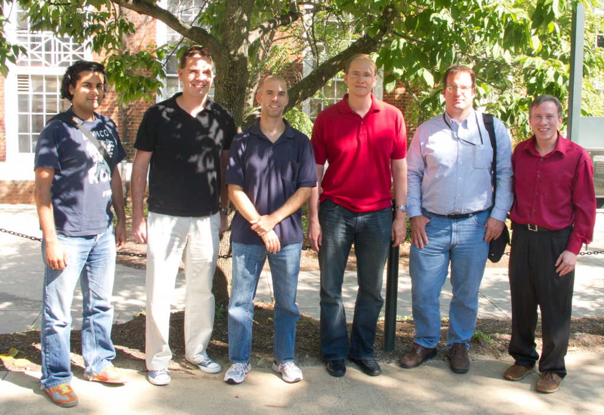

Team
Principal Investigators |
||
|---|---|---|
 David Evans (PI)
University of Virginia (Computer Science)
|
Michael Hicks
University of Maryland (Computer Science)
|
 Jonathan Katz
University of Maryland (Computer Science)
|
 University of Virginia (Public Health Sciences)
|
 Indiana University (Informatics and Computing)
|
University of Virginia (Computer Science)
|
{kind=link}

{kind=link}
Principal Investigators at Kickoff Meeting in Charlottesville (Left-to-Right):
abhi shelat, Steven Myers, Michael Hicks, Jonathan Katz, Aaron Mackey, David Evans
Students and Post-Doc Visitors
Hao Bao (University of Virginia, BSCS 2016; joining Harvard PhD program)
Pam Bilo (Indiana University)
Peter Chapman (University of Virginia, BACS 2012)
Jiamin Chen (University of Virginia, BACS 2012)
Yikan Chen (University of Virginia, PhD Student)
Jack Doerner (University of Virginia, BSCS 2015 and PhD Student)
Mohammad Etemad (University of Virginia, Post-Doc 2015-2016)
Brittany Harris (University of Virginia, BACS 2013)
Samuel Havron (University of Virginia, BSCS 2018)
Yan Huang (University of Virginia, PhD completed 2012; now Assistant Professor at Indiana University)
Sang Koo (University of Virginia, BSCS/BSCpE 2013)
Benjamin Kreuter (University of Virginia, PhD Student)
Mahnush Movahedi (University of Virginia, Post-Doc 2016; now at Yale University)
Mona Sergi (University of Virginia, PhD Student)
Chi-hao Shen (University of Virginia, PhD Student)
Shengxuan (Jerry) Ye (University of Virginia, BSCS 2012)
Samee Zahur (University of Virginia, PhD completed 2016)